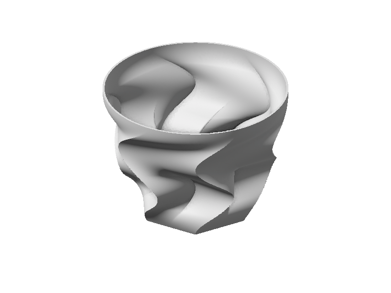
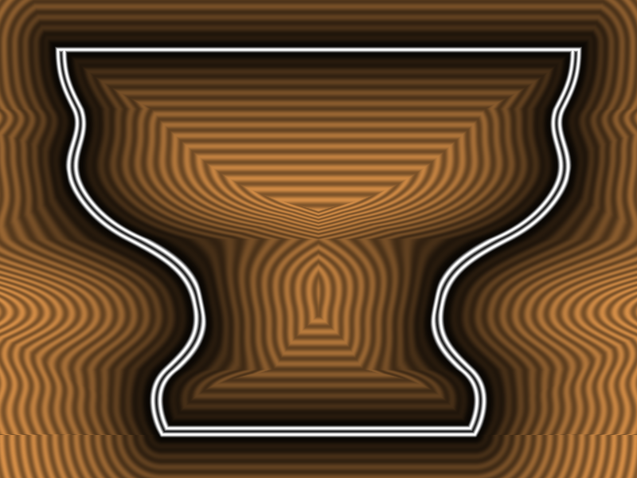

vase-interpolate
Drafted with AI, not yet reviewed
Vase whose outline turns from a hexagon into a hexagram, back, and then into a circle, widening and swaying as it rises, where it is 72 layers of 180 points stitched into a polyhedron.
The OpenSCAD design interpolates the points of two outlines. Between a hexagon and a hexagram, whose 12 corners pair up, that is a star whose inner corners move in: here it is star() with a depth that keyframes() eases over the height, so every layer is the same outline as there. The circle has no corners to pair with; lerp() blends it in as a field, which draws in-between outlines a little rounder than the points did.
The OpenSCAD design is a solid, to print in vase mode; here WALL hollows it, to print as it is.


Files
Source
// SPDX-License-Identifier: 0BSD // // Vase whose outline turns from a hexagon into a hexagram, back, and then // into a circle, widening and swaying as it rises; ported from OpenSCAD, // where it is 72 layers of 180 points stitched into a polyhedron. // // The OpenSCAD design interpolates the points of two outlines. Between a // hexagon and a hexagram, whose 12 corners pair up, that is a star whose // inner corners move in: here it is star() with a depth that keyframes() // eases over the height, so every layer is the same outline as there. The // circle has no corners to pair with; lerp() blends it in as a field, which // draws in-between outlines a little rounder than the points did. // // The OpenSCAD design is a solid, to print in vase mode; here WALL hollows // it, to print as it is. // --- Parameters --- const R_BOTTOM = 30.0; // circumradius at the foot const R_TOP = 50.0; // and at the rim const HEIGHT = 75.0; const TWIST = 30.0; // degrees the outline sways each way const WALL = 1.2; // 0 for a solid, to print in vase mode // --- Profile --- // A hexagon is the 6-pointed star whose inner corners sit on its edges, // cos(30) out; a hexagram's sit 1 / sqrt(3) out, where its triangles cross. const HEXAGON = cosd(30); const HEXAGRAM = 1.0 / sqrt(3.0); let third = HEIGHT / 3.0; let depth = keyframes(z, [ [0.0, HEXAGON], [third, HEXAGRAM, "in_out_cubic"], [third * 2.0, HEXAGON, "in_out_cubic"], ]); let stars = star(6, [1.0, depth]); let outline = lerp(stars, circle(1.0), ease_in_out_cubic(linstep(third * 2.0, HEIGHT, z))); // --- Vase --- // The outline changes on its own schedule, so loft() only scales and turns // it: the sway out and back with every third, the radius over the whole // height. let vase = loft([ #{z: 0.0, shape: outline, scale: R_BOTTOM}, #{z: third, angle: TWIST, ease: "in_out_sine"}, #{z: third * 2.0, angle: 0.0, ease: "in_out_sine"}, #{z: HEIGHT, angle: TWIST, ease: "in_out_sine", scale: R_TOP, ease_scale: "out_quadratic"}, ]); // The cylinder round it changes no value, but tells interval arithmetic // where the vase ends, which the turning outline hides. let vase = max(vase, hypot(x, y) - R_TOP); // A wall of even thickness, measured square to the surface even where the // outline leans and turns; the top cut away to open it. let model = if WALL > 0.0 { vase.shell(WALL).intersection(z - (HEIGHT - WALL)) } else { vase }; bounds([-55, -55, -1], [55, 55, HEIGHT + 1]); resolution(5); draw(model);